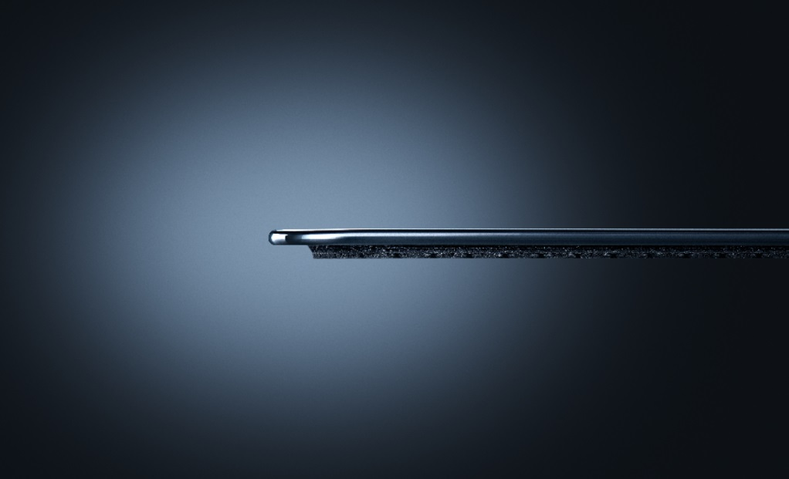

Quem usar esse produto terá um mousepad mais próximo da mesa, integrando melhor o ambiente e setup agora que a marca de 2mm finalmente foi batida. Além da base de borracha, a camada de vidro em si mede só 1,1mm.
Segundo Charlie Bolton, o diretor global de design da Razer, o Atlas Pro:
"Foi uma oportunidade de nos desafiarmos em uma categoria que estava praticamente estagnada. Ao repensar como o vidro deveria se posicionar sobre a mesa, criamos uma superfície mais fina, mais refinada e projetada para se integrar perfeitamente a setups modernos — e esse processo é o que levou ao mousepad gamer de vidro mais fino do mundo.”